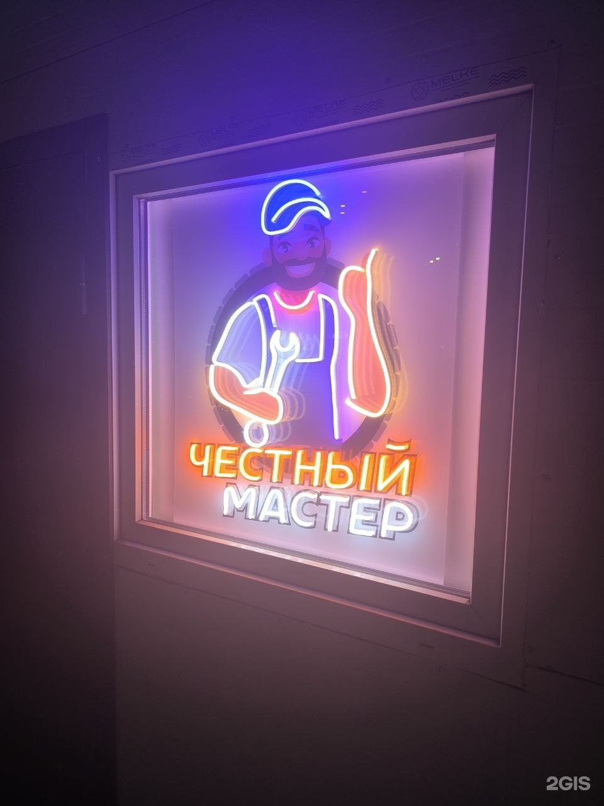

Никаких внезапных наценок и навязанных замен. Снимаем видео реального состояния узлов вашего автомобиля и согласовываем каждую копейку перед началом ремонта.

В большинстве сервисов водитель оставляет авто и переживает, действительно ли была необходимость менять ту или иную деталь. У нас всё иначе:
Фиксированные цены на все виды работ для легковых авто, кроссоверов и коммерческого транспорта.
Высокоточная балансировка, динамометрическая затяжка
Безопасность и уверенность в управлении автомобилем
Регламентное обслуживание всех марок авто
105 независимых отзывов со средней оценкой 4.9 из 5.0 на картах 2ГИС.
«Я чинила в другом сервисе машину, отдала 200к и думала все ок, но через неделю снова тарахтело. Приехала к ребятам наобум. И МНЕ НАЧАЛИ ОТПРАВЛЯТЬ ВИДЕО!! — я тут обалдела! Показывают, объясняют доступно зачем что нужно менять. Цены очень приятные, обслуживание на высшем уровне. Машина едет как новая!»
«Автосервис шикарный, однозначно рекомендую! Приехал на срочный ремонт (замена радиатора), сделали все быстро и качественно. Плюсом все проделанные работы сразу же отправлялись в личные сообщения в виде фото и видео. 100% буду ездить только сюда!»
«Обращался по электрической части, приняли оперативно, электрик выявил проблему (генератор, реле распределения). Ценник не кусачий, все попутные проблемы озвучивают с фото и видео в мессенджере, за что огромное спасибо! Буду обращаться.»
«Промывали радиатор и печку, по каждой работе видеоотчет, сделали все качественно. В боксах чистота и порядок, мастера вежливые.»
«Хороший сервис, все просто доступно объясняют, лишнего не навязывают. По качеству работ все хорошо. Приятно удивлен отчетам в видео формате. Добросовестно выполняют работу, что редкость в сервисах сегодня.»
«Отличный сервис. Очень нравится, что все фотографируют, снимают видео процесса каждого ремонта. Брались и за Ситроен Пикассо, находили и решали проблему. Также возим много лет сюда Мазду 3. Все просто идеально!»
Приезжайте в наш автокомплекс на Индустриальном проспекте. Удобный заезд, теплый бокс, охраняемая территория.
Оставьте контакты, мастер свяжется в течение 5 минут для согласования времени.